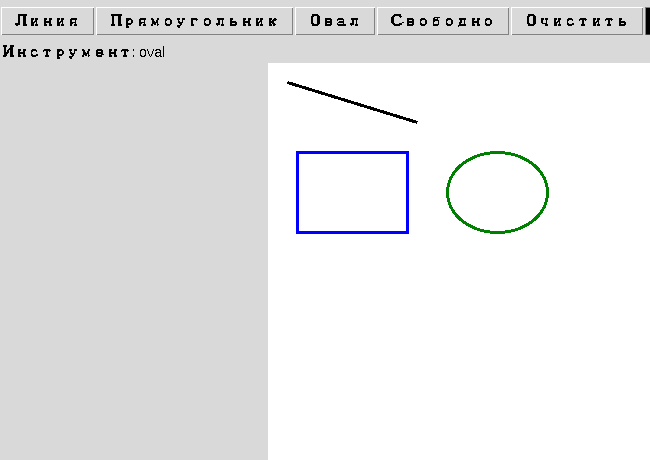

Глава 18 · Canvas по-настоящему
Canvas хранит объекты, а не пиксели
create_line() не просто рисует — он добавляет элемент в список, который Canvas помнит сам.
Canvas не «красит пиксели» — он хранит объекты
Первый прототип уже рисует, но легко представить его неправильно: будто
create_line() просто закрашивает пиксели на картинке, как кисть
в графическом редакторе. На самом деле Canvas устроен иначе — и от этого зависит почти всё
остальное в этой главе: отмена действий, редактирование фигур, порядок наложения.
canvas.create_rectangle(...)
↓
Canvas
сохраняет фигуру как элемент
↓
item_id = 3
↓
экран
Возвращённое число — item ID, идентификатор именно этого элемента внутри Canvas (раздел 18.10). Пока фигура не удалена явно, Canvas помнит о ней и может её перерисовать, переместить или изменить — даже если ваш код давно закончил с ней работать.

Три разных слоя — не путайте их
| Слой | Что это |
|---|---|
| Модель приложения (Python) | Ваши переменные и структуры данных — то, что вы сами придумали |
| Элемент Canvas (item) | Запись внутри Canvas с типом, координатами и параметрами — создаётся через create_* |
| Пиксели на экране | Итоговая картинка, которую видит пользователь — результат отрисовки элемента |
item ID — это НЕ идентификатор Python-объекта
item_id = canvas.create_rectangle(...) возвращает обычное целое число — внутренний номер записи внутри Canvas, а не id() какого-то Python-объекта и не индекс в списке, который ведёте вы сами. Canvas выдаёт номера по своим правилам (обычно по возрастанию) — полагаться на конкретные значения не стоит, только на то, что каждый item_id уникален для одного элемента.